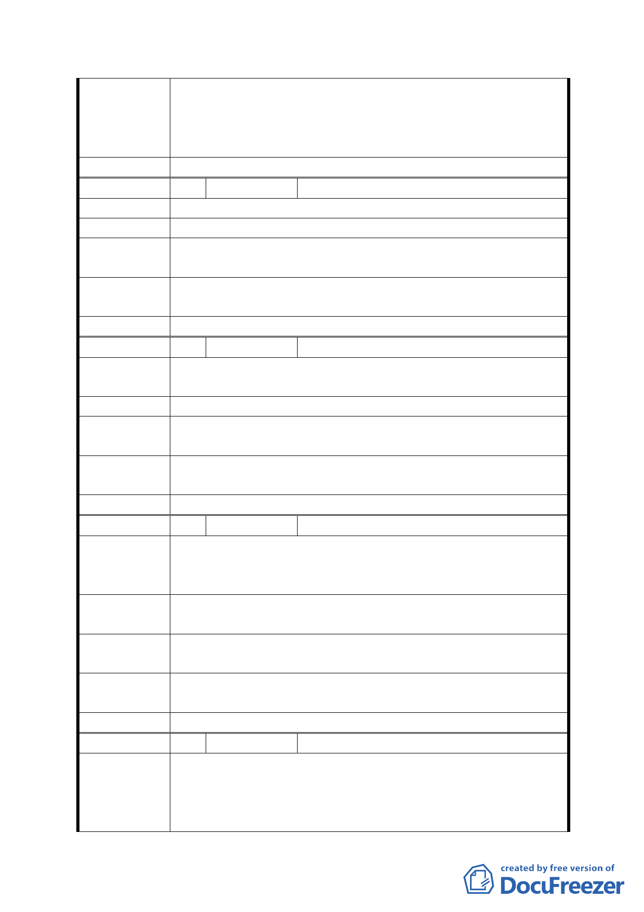

市停車管理工程處營運中之辛亥國小地下停車場，提供小汽
車停車 131 格，惟因地處住宅區，停車使用率及周轉率低，
故基於法令限制及市政資源合理分配等因素，該處目前暫不
考慮於辛亥國、高中預定地興建公共停車場。
委員會決議 同意依「市府修正後回應說明」辦理
編
號 13 陳情人
杜瑜珍
陳情理由
建 議 辦 法 希望軍營遷走。
第五次專案小組
審查結論
同編號 1
市府修正後
回應說明
同編號 7
委員會決議 同意依「市府修正後回應說明」辦理
編
號 14 陳情人
呂素華
陳情理由
1.
2.
將辛亥路上的兩處軍事營區遷走。
反對設置蓄洪池。
建議辦法
第五次專案小組
審查結論
同編號 1
市府修正後
回應說明
同編號 7
委員會決議 同意依「市府修正後回應說明」辦理
編
號 15 陳情人
楊蕉榕
1.辛亥站對面土地，不該是軍事用地、機關用地，如果已經
陳 情 理 由 沒有國高中用地之需求，該有更好方案用途評估，軍營沒
有非留不可的理由，絶對不符合都市發展及時代潮流。
建議辦法
召開學者專家及民眾討論會，決定最適土地發展方案，再尋
求社會民眾共識，來進行合宜之變更用地。
第五次專案小組
審查結論
同編號 1
市府修正後
回應說明
同編號 7
委員會決議 同意依「市府修正後回應說明」辦理
編
號 16 陳情人
孫啟榕
1. 空軍及憲兵軍營影響辛亥捷運站周邊環境整體發展。
陳情理由
2. 興隆路生活圈的整體發展遲滯，需強化土地的有效使用。
3. 支持有效的治水政策，但目前的總合治水方案並未妥善
處理。
- 24 -